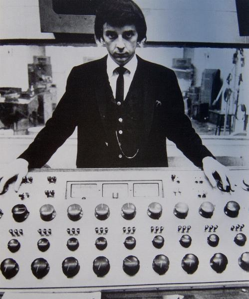

| Michael Ochs Archives | ||
| Back 12/28 |
 | Next 14/28 |
Phil Spector: as songwriter and producer, the twitchy boy wonder's "Wall of Sound" technique created drama-laden epics for The Ronettes (Be My Baby, Baby I Love You), The Crystals (Da Doo Ron Ron, Then He Kissed Me), The Righteous Brothers (You've Lost That Lovin' Feelin') and Ike & Tina Turner (River Deep, Mountain High). |